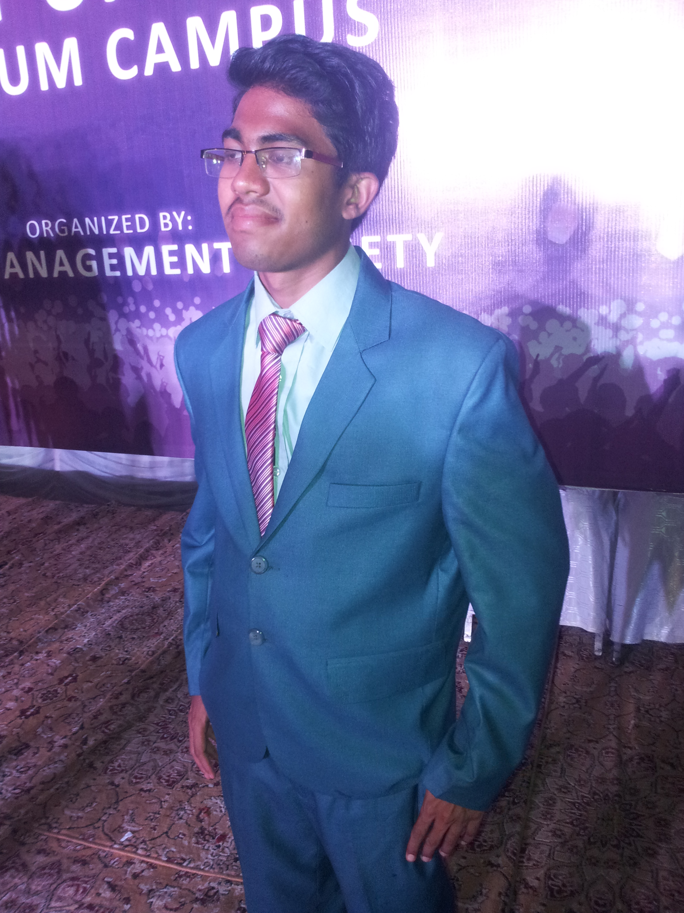

Welcome to My Resume
Personel information
Name: Muhammad Umair Ali
Father Name: Zain Ul Abideen
NIC No: 37301-1197276-3
Date of Birth: June 6, 1997
Nationality: Pakistani
Religion: Islam
Gender: Male
Email: bscs.f16.26@gmail.com
Address: Muslim Town ,Jhelum
Contact# : 03379730676
Education
- Matric:
Board of Intermediate & Secondary Education, Rawalpindi 2012-2013.
- Intermediate:
Board of Intermediate & Secondary Education, Rawalpindi 2013-2015.
- Bachelors:
Punjab University Jhelum Campus(Pujc) 2016-2020(continued)
Interests
- Book reading
- Net surfing
- Playing Cricket

Objective
To work with an organization that provides an environment to enhance my potential and excel. Where I can contribute myself to organization's success through the use of my knowledge of Information Technology
Skills
Databases: Oracle 11g, MS Access 2007
Languages: SQL, C, C++, Java, HTML
Tools: Android Studio,Xcode, Net Beans, Text Pad, Borland C, Dev Cpp, CFree, Visual Studio.
Extra: Communication Skill, Management Skill Education
Projects
- Banking management System in C
- Banking management System in C++
- Railway Network (cisco)